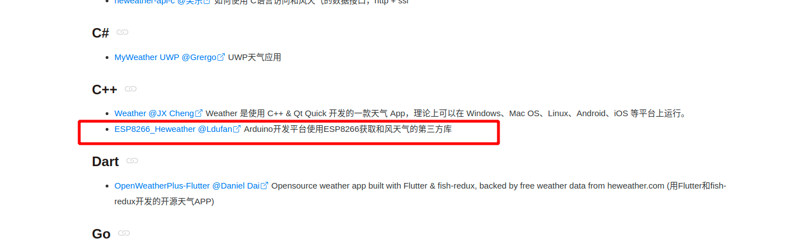
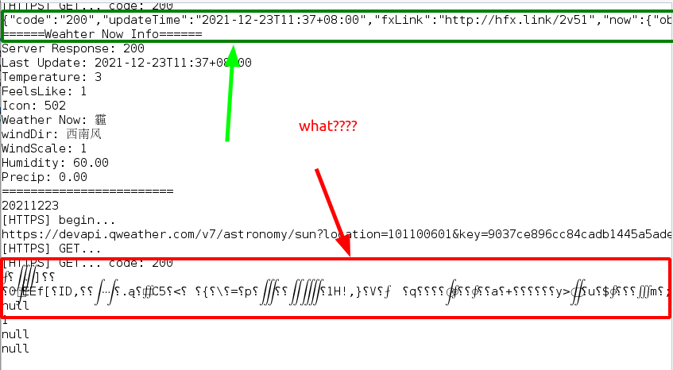
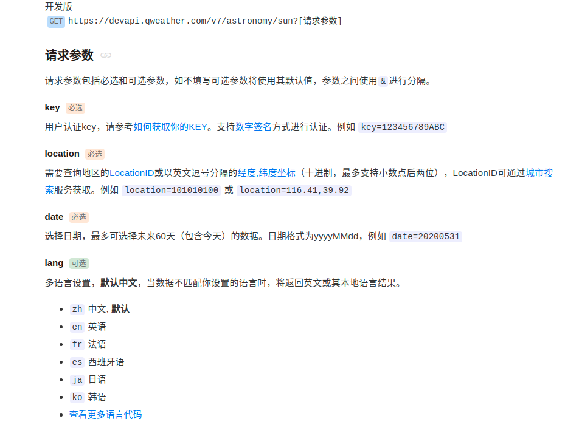
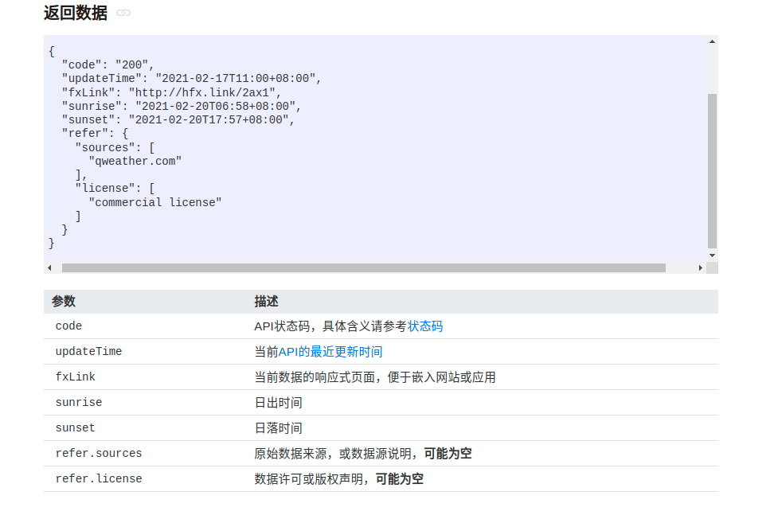
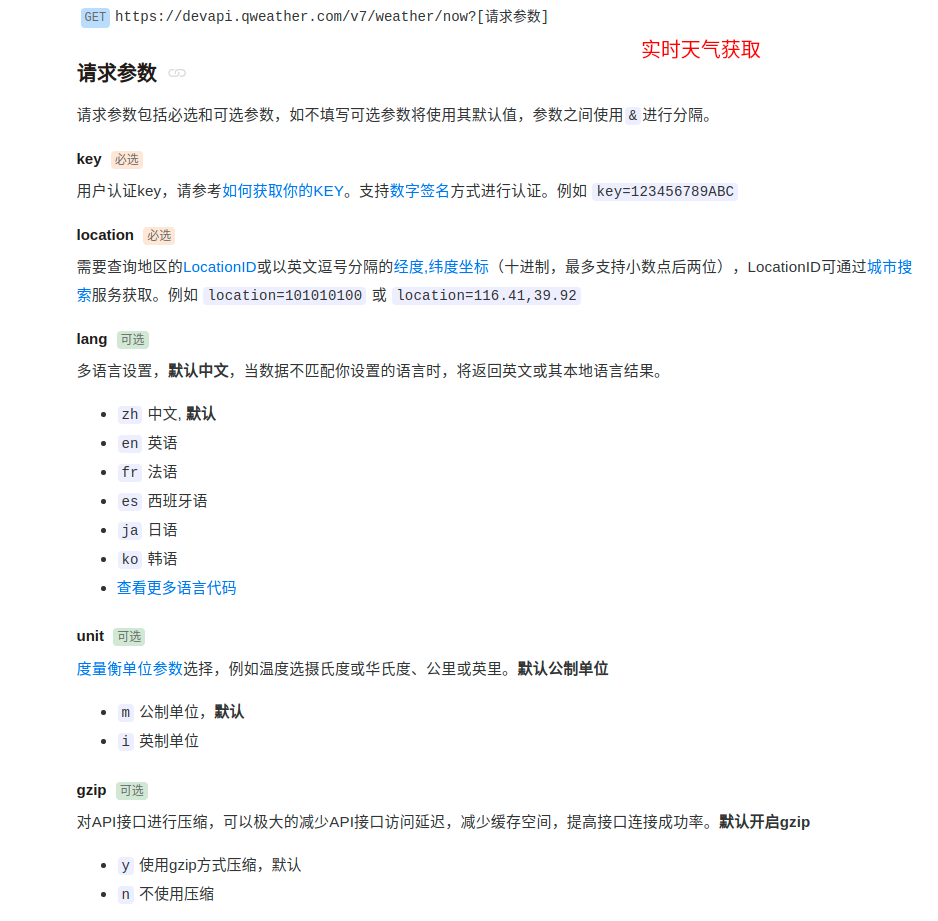
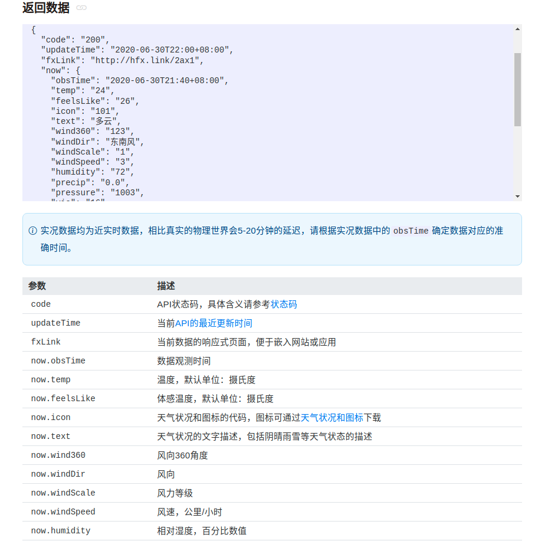
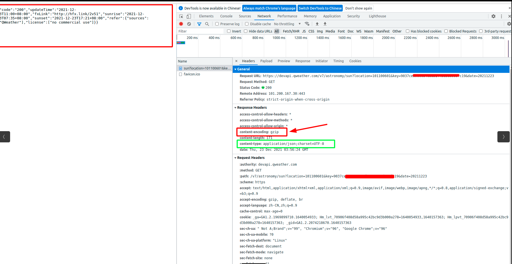
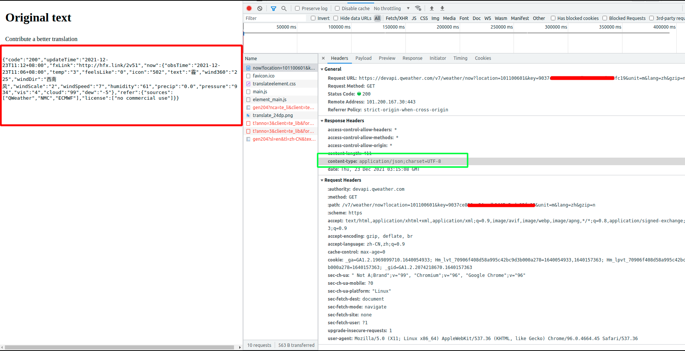
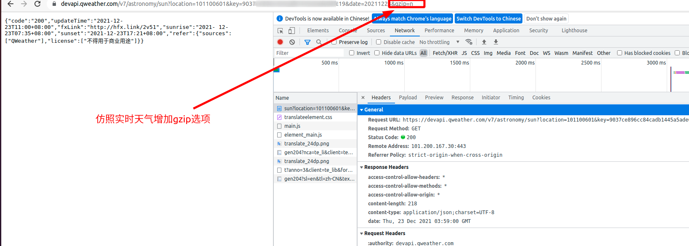

和风天气API接口调用(日出日落信息)
和风天气API接口调用(日出日落信息)
前段时间忙着对外项目，偶然机会想在设备端使用API获取日落时间，用于满足自动化切换。起初项目是使用心知天气API，因涉及到“商用“…….（胡说.八道，哈哈哈哈…反正甲方也不知道，用免费的接口就行，无奈心知天气日出日落需要付费，程序写了七七八八改也麻烦，何况资金也算充足，所幸良心发现就没有薅羊毛，不过确实付费的要稳定很多）。
后来想自己做一款Homekit自动化终端，实现联动控制。其实HomeKit的自动化构建功能还是蛮强大的，我其实最看好的“离家模式“”，hass平台上可以通过noderead编写工作流，设备层通过蓝牙扫描手机蓝牙来判断（毕竟大多数时候手机不离身），但这个有个缺点就是蓝牙必须一直开着。利用Homkit原生自动化场景可以很轻松实现这个功能，不需要去部署hass，也能正常使用。当然其所灵活性方面来说，还是更倾向Hass，可集成的功能真的是太多了。考虑到设计的目的是为了送人，还越简单越好。
开发工具
- arduino IDE （完全是为了偷懒，因为arduino库很全，我也没过多时间放在这上面，虽然idf框架开发也会，但是整体要比arduino复杂很多，当然IDF性能会好点）
- ESP32芯片（乐鑫）
- API（心知天气付费的嘛，找了找“和风天气”对于地理位置类API是免费的，继续薅）
工具库
- 说实话，一开始没想过要找和风天气的API接口库，API调用本来不复杂，就是http/https请求嘛，只要发的出去，解析的回来不就成了，浏览和风官网发现有个ESP8266的库。
-  哈哈哈，要啥有啥，ESP8266虽然说不能直接应用于ESP32设备，但是API核心发送，解析是网络层应用和设备没关系哇，那就改改设备驱动的那快呗，本来两款芯片都内置wifi库的，所以就替换下接口的事。随后更新到我的github上吧，毕竟开源协议要靠大家共同遵守维护的。
爬坑之旅
以为接口移植好了，天气信息/日出日落返回正常，本打算收工歇息了。烧录进去测试发现天气获取正常，日出日落返回一直无法解析的乱码。
当场蒙圈了,啥问题，API不对？那为啥服务器返回200 ，对比API和发送请求

我去没啥毛病啊，再对比下实时天气的请求和返回参数。


难道编码不对？arduino貌似也是utf-8输出吧，要是改编码那我得知道改成啥格式的才行。emo……了半天，决定看下服务器返回所有信息。


折腾了半天，还打算换编码来着，对比一看都是utf-8没毛病，可是为啥日出日落带着压缩参数，返回上面看API页面，实时天气有，但是日出日落没写gzip参数啊！！！入坑一小步，爬坑爬半天，官方手册不可不信也不能全信。在日出日落请求加上无压缩参数，顺利搞定。

本博客所有文章除特别声明外，均采用 CC BY-NC-SA 4.0 许可协议。转载请注明来自 Mr.chen Blog！
评论